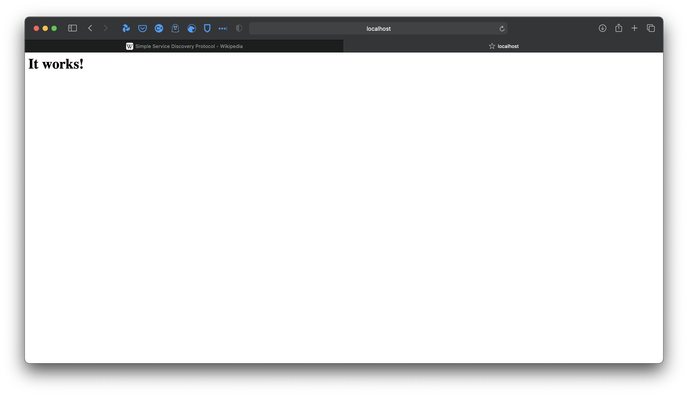
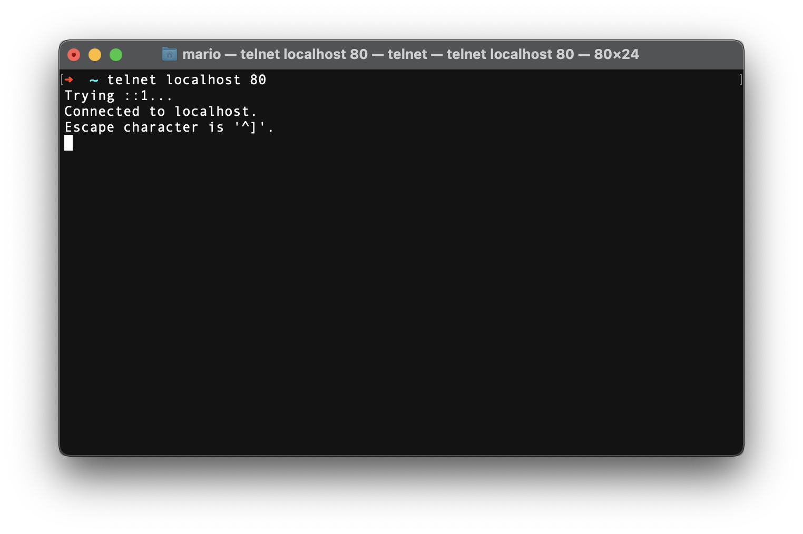
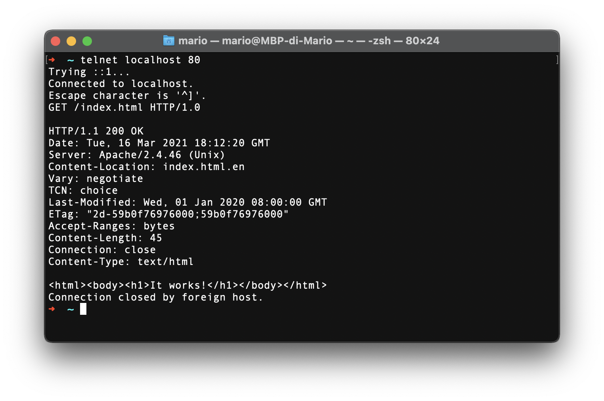

Guida per l’installazione e la configurazione di un server HTTP su macOS
Questa guida è per coloro che, non avendo la possibilità di utilizzare la virtual machine del corso, vogliono comunque sperimentare e provare ad inviare richieste HTTP attraverso riga di comando.
Indice
- /Installare Homebrew
- /Installare Apache
- /Installare Telnet
- /Avviare il server Apache
- /Fare richieste HTTP al server
- /Disattivare il server Apache
Installare Homebrew
Come per i sistemi operativi basati su Linux, anche macOS ha un package manager, chiamato Homebrew.
Per controllare che Homebrew non sia già installato, immetti il seguente comando sul Terminale:
brew --version
/bin/bash -c "$(curl -fsSL https://raw.githubusercontent.com/Homebrew/install/HEAD/install.sh)"Installare Apache
Apache è un server HTTP che creerà una pagina web di prova ed aprirà un processo HTTP sulla porta 80 del computer. Per Installare Apache, usiamo una formula di Homebrew. Installa Apache con questa formula sul terminale:
brew install apache2
Installare Telnet
Telnet è il servizio che useremo per comunicare con Apache. Anche questo si installa attraverso una formula Homebrew:brew install telnetAvviare il server Apache
Ora che Apache è installato e che possiamo comunicare con esso attraverso Telnet, avviamo il server Apache con questo comando:
sudo apachectl start
sudo è una stringa che dà privilegi root all’utente che sta digitando i comandi. Sarà necessario scrivere la propria password utente, quella usata per fare il login al computer, per continuare. Non allarmatevi se il cursore non si muove, il vostro computer funziona. Per motivi di sicurezza, il terminale non lascia vedere la password che digitate.
Dopo aver inserito la vostra password, premete invio e il servizio si avvierà.
Per controllare che il server funzioni, aprite un qualsiasi browser web e navigate all’IP 127.0.0.1 o localhost. Dovreste vedere una pagina di questo tipo:

Il server è ora avviato ed ha generato una pagina web raggiungibile sull’IP127.0.0.1, porta 80.
Fare richieste HTTP al server
Ora possiamo provare a fare una richiesta HTTP al server. Per farlo, bisogna avviare Telnet, ponendo come argomento IP e porta di destinazione:telnet localhost 80
telnet 127.0.0.1 80

Ora possiamo effettivamente inviare una richiesta HTTP al nostro server. Come esempio, userò una richiesta HTTP 1.0 per richiedere la pagina di prova:GET /index.html HTTP/1.0

Se sapete le basi dell’HTML, riconoscerete che nell’entity body della risposta HTTP si trova il codice esatto che rappresenta la pagina web vista in precedenza. Avendo usato l’HTTP 1.0, che non supporta connessioni persistenti, la connessione è stata chiusa dal server automaticamente una volta inviata la risposta al client.Disattivare il server Apache
Ora che abbiamo sperimentato con una richiesta, possiamo disattivare il servizio Apache dal terminale con questo comando:sudo apachectl stop
Grazie di aver letto questa guida, spero che possa essere stata d’aiuto e che abbia chiarito dubbi sul funzionamento del Terminale, di Telnet, di Apache e delle richieste HTTP.
Ritorna alla pagina principale
Licenza
Appunti A.A. 2020/21 Fondamenti di Comunicazione e Internet by Mario Merlo is licensed under CC BY-NC 4.0